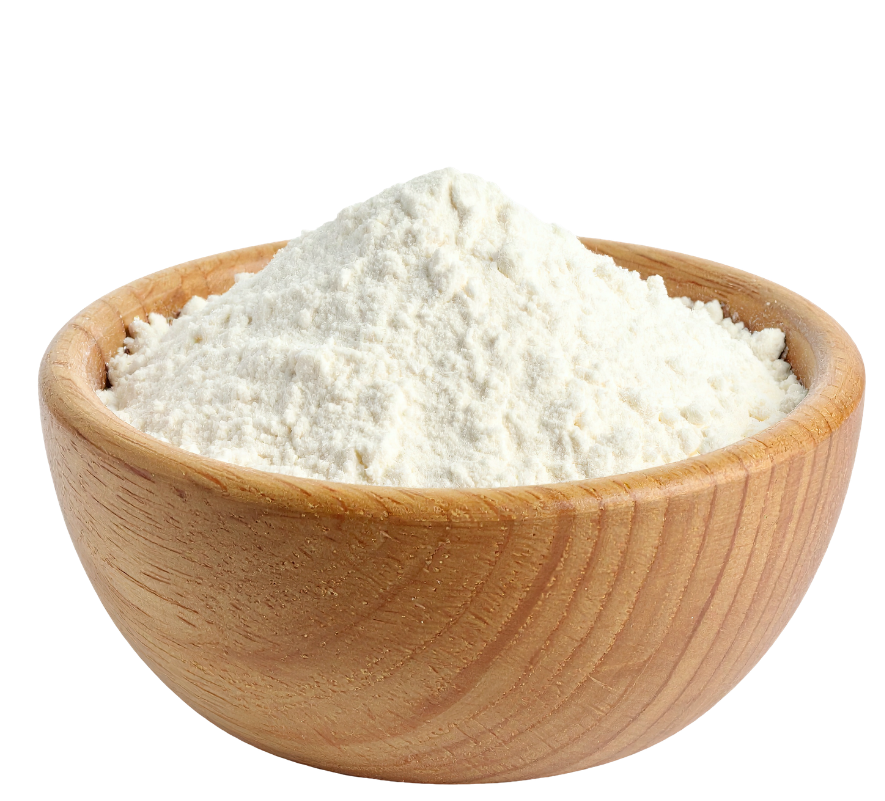
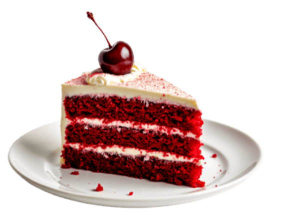

Muffin
Misture em uma tigela os secos: 2 xícaras de farinha de trigo, ¾ de xícara de açúcar, 1 colher de sopa de fermento em pó e uma pitada de sal. Em outro recipiente, combine os líquidos: 1 xícara de leite, ½ xícara de óleo (ou manteiga derretida), 2 ovos e 1 colher de chá de baunilha. Despeje os líquidos sobre os secos e mexa apenas o necessário para incorporar — o segredo do muffin é deixar a massa com alguns grumos, pois bater demais deixa o bolinho pesado. Por fim, adicione 1 xícara de gotas de chocolate (ou mirtilos/castanhas), distribua em forminhas de papel preenchendo quase até o topo e asse a 200°C por cerca de 20 minutos até dourarem.



Red Velvet

Para um bolo médio, bata 200g de manteiga com 1 ½ xícara de açúcar e 2 ovos. Adicione 1 colher de chá de baunilha e 1 colher de sopa de corante em gel vermelho misturada em 1 xícara de leitelho (leite com gotas de limão). Incorpore aos poucos 2 ½ xícaras de farinha de trigo peneiradas com 1 colher de sopa de cacau em pó e uma pitada de sal. Por fim, misture 1 colher de chá de bicarbonato com 1 colher de chá de vinagre, junte à massa e asse a 180°C. Para o frosting, basta bater 300g de cream cheese gelado com 150g de manteiga, 2 xícaras de açúcar de confeiteiro e baunilha até firmar.